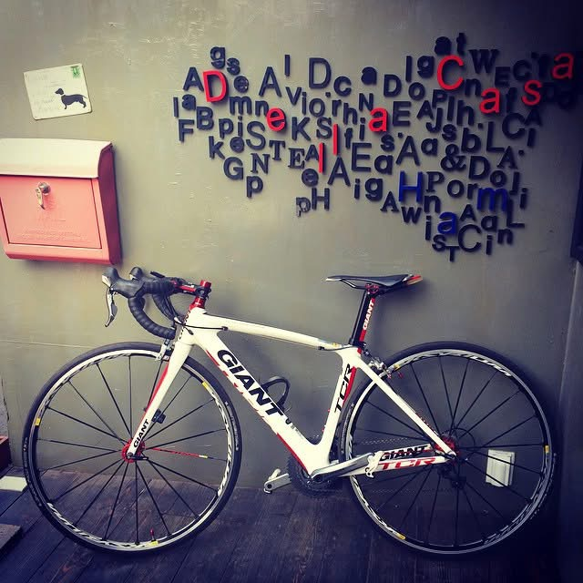

다리를 믿는 시간
비움 · 라이딩 · 전진
미시령을 넘어가며 내가 알고 있던 욕을 다 했다. 그리고 내려오며 천국을 맛봤다. 그렇게 추월하던 바이크를 보며 꼭 나도 바이크로 미시령을 오기로 했다.
자전거는 묘하게 정직했다. 밟은 만큼 가고, 멈추면 멈춘다. 그래서 머리가 복잡한 날엔 말보다 다리가 먼저였다.

LPH-B613-04 · HAM MEDIA CONSTELLATION
두 발로 가는 건 딴생각하면 큰일 난다.
머리가 복잡한 날엔 다리를 믿고 그냥 전진했다.
그렇게 몸을 비우는 법이, 지금도 나를 재운다.
비워야 채워진다는 걸 아는 사람이라면.
스크롤이 페달이 됩니다
01 · 페달
자전거는 밟은 만큼 가고, 멈추면 멈춘다. 그래서 머리가 복잡한 날에는 말보다 다리가 먼저였다.
“부평에서 부천은 껌이지. 하하.”

02 · 오르막
힘든데 이상하게 조용해지는 느낌. 코스를 정복해서가 아니라, 지금 한 번 더 밟는 일만 남기 때문이다.
미시령을 넘어가며 내가 알고 있던 욕을 다 했다.
03 · 버팀
몸이 기억한 문장은 거창한 승리 선언이 아니었다. 멈추고 싶은 순간에 다시 한 바퀴를 만드는 낮은 기준이었다.
패배는 단지 일시적인 것에 불과하지만,
포기해버리면 그걸로 모든 건 끝이다.

04 · 내리막
오르막이 사라진 것은 아니다. 다만 머릿속을 가득 채웠던 것들이 빠져나가고, 다시 잠들 수 있을 만큼 몸이 조용해졌다.
몸을 비우는 법이, 지금도 나를 재운다.

05 · 라이딩 뒤에 남은 것
기록표에 남은 숫자보다 오래 간 것은 길 위의 농담, 함께 세워둔 두 대의 자전거, 누군가를 위해 마련했던 작은 자리였다. 그래서 이 페이지는 얼마나 잘 탔는지가 아니라, 한 사람이 무엇으로 다시 조용해졌는지를 보여준다.
받은 기록실제 사진 11장 · 몸에 남은 문장 2개 · 한 사람의 라이딩 기억
찾은 중심복잡함에서 고요로 내려오는 몸의 변화
만든 경험사진·문장·움직임이 한 번의 라이딩처럼 이어지는 웹페이지



안쪽으로 들어가는 네 개의 문
다른 별로
이 별은 HAM MEDIA Design MD 방식으로 정리한 별입니다. 좋아하는 것의 감각을 브랜드의 기준으로 바꾸는 실험이기도 합니다.
자전거별 · 문장
비움 · 라이딩 · 전진
미시령을 넘어가며 내가 알고 있던 욕을 다 했다. 그리고 내려오며 천국을 맛봤다. 그렇게 추월하던 바이크를 보며 꼭 나도 바이크로 미시령을 오기로 했다.
자전거는 묘하게 정직했다. 밟은 만큼 가고, 멈추면 멈춘다. 그래서 머리가 복잡한 날엔 말보다 다리가 먼저였다.
탑튜브 · 문구 · 포기하지 않기
로또팀의 리더 반덴브록의 자전거 탑튜브에는 인상적인 문구가 새겨져 있었다.
Being defeated is often a temporary condition, giving up is what makes it permanent.
패배는 단지 일시적인 것에 불과하지만, 포기해버리면 그걸로 모든 건 끝이다.
자전거별 · 장면


자전거별 · 디자인
이 페이지의 선은 추천 코스나 주행 기록이 아닙니다. 복잡한 머리에서 출발해 페달, 오르막, 버팀, 고요로 이어지는 몸의 상태를 표시합니다. 스크롤할수록 크랭크와 고도선이 함께 움직이는 이유도 기록을 읽는 동작을 한 번의 라이딩처럼 만들기 위해서입니다.
오르막에서는 호흡 막대가 촘촘해지고, 내리막에서는 길어졌던 숨이 가라앉습니다. 모션을 줄이도록 설정한 화면에서는 이 감정선만 정적인 순서로 보존합니다.